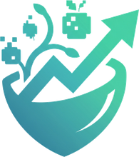

Mealyze
Mealyze
로그인 / 회원가입
오늘 뭘 드셨나요?
사진 한 장이면 영양소까지 계산해드려요.
음식 사진을 올려주세요
사진 촬영 / 앨범에서 선택
33%
오늘 요약
700 / 2,150kcal · 33%
아침만 기록됨 · 점심을 기록해보세요
›
오늘의 퀘스트
+15 XP
식사 1회 기록하기
0 / 1
음식을 분석하고 있어요
음식 종류와 먹은 양을 알아낸 뒤
식약처 영양 데이터에서 찾아봐요
식약처DB
정확도 높음
제육볶음 외 2개
총
0
kcal
1인분 · 약 200g 기준
언제 드셨어요?
아침
점심
저녁
간식
저장하기
다시 찍기
오늘 먹은 열량
1,386
/ 2,150 kcal
3개 충족
3개 부족
오늘의 순위
로그인하면 다른 사용자와 레벨·경험치로 경쟁할 수 있어요
로그인하고 순위 보기
부족한 영양소를 채워줄 곳
단백질 · 식이섬유 기준 · 현재 위치에서 가까운 순
Mealyze
찍고, 알고, 채운다
녹화 중
▶ 재생
⟲ 처음부터
↻ 반복 : 끔
⛶ 전체화면
Space 재생 · R 처음부터 · F 전체화면 · L 반복 · ← → 1초 이동 · H 숨기기
● 영상으로 저장